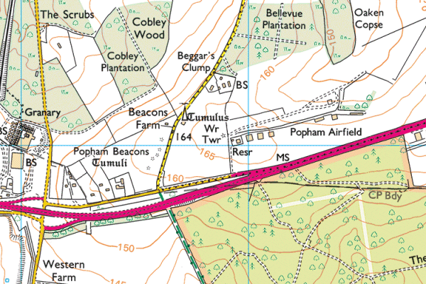

{kind=link}
Hampshire Cross-Country League
Popham Airfield, Basingstoke

Final instructions
There has been considerable loss of our parking area due to construction of new Hangars and a Taxi Way since 2019.
PLEASE CAR SHARE CARS WHERE POSSIBLE. There will be two parking areas so please follow the Marshal's instructions.
All tents/awnings must be carried from the Car Park - there is no vehicle access to the Tent Area.
ALL CARS SHOULD USE THE NEW EXIT.
PLEASE NOTE: A condition of us having use of the Airfield is that all dogs must be on a lead at all times.
Portable toilets have been hired in and will be situated near the Start/Finish Area.
Course maps (updated for 2022) can be downloaded. The running surface is mainly good grassland although there are some rougher areas. Although not steep, there are some long uphill sections on each lap.
Refreshments will be available from an outlet brought in by the management of the Airfield.
Please note a very good relationship has been formed with the the owners of the Airfield and to make sure this is maintained:
- DO NOT STRAY ON THE AIRFIELD;
- DO NOT STRAY ON THE OTHER SIDE OF THE WOODEN FENCE;
- DO NOT CROSS OVER THE TAPED-OFF MODEL PLANE FLY AREA;
- DO NOT ENCROACH FURTHER INTO THE WOODS THAN THE MARKED ROUTE.
The Tented Area will be in the centre of the course away from the Model Flying Area.
Please make sure you drive carefully when leaving and give away to traffic leaving the main Airfield Buildings coming from the left.
No Under 11 race at Popham
Please note that there will be no Under 11 race, as there is unsufficient parking available for the additional numbers that this race might generate.
Sat Nav destination
Postcode: SO21 3BD (Note: This postcode covers a large area so follow the directions given below as you approach the airfield.)
OS Grid Reference: SU529439
Directions from Basingstoke
Take the M3 southbound. At Junction 8, turn off on the A303 towards Andover and the South West. Climb the hill on the dual carriageway and as you pass Popham Services (Starbucks & BP on left side, Popham Diner & Esso on right side) you should be able to see the big orange airfield windsock on the other side of the dual carriageway. Continue to about 1/2 mile and take the next exit left signed Micheldever Station & Overton. Drop down to the bottom, turn right under the A303 bridge, turn immediately right again as if rejoining the A303 towards Basingstoke. This is a two-way slip road and the airfield entrance brick and iron gates at the top of the rise on your left just 100 metres before you rejoin the A303.
Directions from Andover
Take the A303 eastbound. Note when you cross the junction of the A34 (Bullington Cross) and stay on the A303. Discount one very small road on the left (to Norton), continue to the second main exit marked with countdown boards, signed Micheldever Station and Overton. Drop down the slip road, and at the end go straight on as as if rejoining the A303 towards Basingstoke (this requires a little wiggle right and left) but the slip road is now signposted Popham Airfield. You will see the brick and iron gates of the airfield on the left, just 100 metres before rejoining the A303.
Directions from Newbury
Travel south on the A34. Pass Whitchurch. Turn left on the A303 eastbound towards Basingstoke (Bullington Cross). Follow latter part of Andover direction as above.
Directions from Winchester
Take the A34 northbound. Turn right on the A303 eastbound towards Basingstoke (Bullington Cross). Follow latter part of Andover direction as above.
Further information
Popham Airfield (external link)